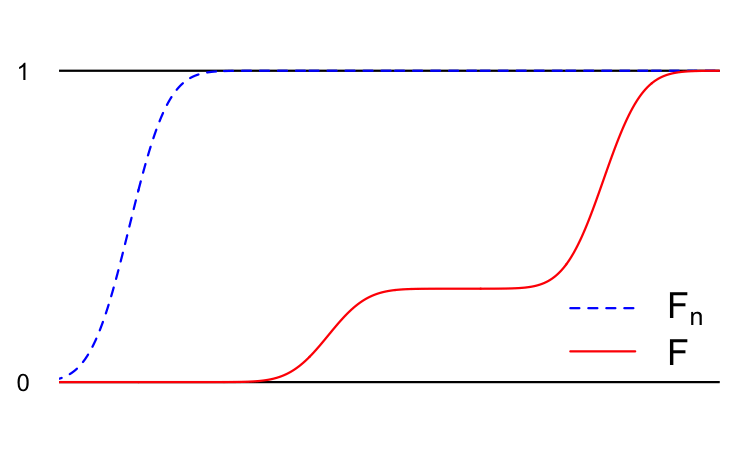

Central limit theorem
Recap: sums and averages of iid random variables
In the last lecture, we studied iid collections of several random variables:
\[ X_1,\,X_2,\,X_3,\,X_4,\,...\overset{\text{iid}}{\sim}P. \]
Because these are identically distributed, we introduced notation for the common mean \(\mu=E(X_1)\), common variance \(\sigma^2=\text{var}(X_1)\), and common moment-generating function \(M(t)=E(e^{tX_1})\) shared by all \(X_i\) in the collection. Obviously, we are assuming these objects exist to begin with, which is not always the case (think Cauchy).
Based on the iid collection, we defined the running sum and the running average of the first \(n\) variables:
\[ \begin{aligned} S_n&=\sum\limits_{i=1}^n X_i\\ \bar{X}_n&=\frac{1}{n}\sum\limits_{i=1}^n X_i=\frac{1}{n}S_n. \end{aligned} \]
Because these depend on the \(X_i\), \(S_n\) and \(\bar{X}_n\) are themselves random variables with their own distributions, and we sought to itemize their properties: mean, variance, full distribution, etc. Here’s what we came up with:
\[ \begin{aligned} E(S_n)&=n\mu\\ E(\bar{X}_n)&=\mu\\ \\ \text{var}(S_n)&=n\sigma^2\\ \text{var}(\bar{X}_n)&=\sigma^2/n\\ \\ M_{S_n}(t)&=M(t)^n\\ M_{\bar{X}_n}(t)&=M(t/n)^n.\\ \end{aligned} \]
In the case of the mean and the variance, we have generic formulas that work for any \(P\). If we want to say what the exact distribution is, then we need to know what the original \(P\) was. Using those updating formulas for the MGF, we worked several special cases:
\[ \begin{aligned} P=\text{Bern}(p) \quad & \implies &&S_n\sim\text{Binom}(n,\,p)\\ \\ P=\text{Poisson}(\lambda) \quad & \implies &&S_n\sim\text{Poisson}(n\lambda)\\ \\ P=\text{Gamma}(\alpha,\,\beta) \quad & \implies &&S_n\sim\text{Gamma}(n\alpha,\,\beta)\\ \quad & \implies &&\bar{X}_n\sim\text{Gamma}(n\alpha,\,n\beta)\\ \\ P=\text{N}(\mu,\,\sigma^2) \quad & \implies &&S_n\sim\text{N}(n\mu,\,n\sigma^2)\\ \quad & \implies &&\bar{X}_n\sim\text{N}(\mu,\,\sigma^2/n)\\ \end{aligned} \]
Neat! Now, here’s the $\(10^6\) question. What happens as \(n\to\infty\)? As you average more and more of these iid random variables, what happens to the distribution? Let’s see:
#| '!! shinylive warning !!': |
#| shinylive does not work in self-contained HTML documents.
#| Please set `embed-resources: false` in your metadata.
#| standalone: true
#| viewerHeight: 500
library(shiny)
ui <- fluidPage(
titlePanel("What happens as you average more and more iid random variables?"),
sidebarLayout(
sidebarPanel(
selectInput("dist", "Choose an underlying distribution P:",
choices = c("Bernoulli", "Poisson", "Gamma")),
# The sliders will appear here:
uiOutput("param_ui")
),
mainPanel(
plotOutput("distPlot")
)
)
)
server <- function(input, output, session) {
# Dynamically choose which sliders to show
output$param_ui <- renderUI({
req(input$dist)
if (input$dist == "Bernoulli") {
tagList(
sliderInput("n", "Sample size (n):", min = 1, max = 200, value = 1, step = 1),
sliderInput("p", "Probability of success (p):", min = 0, max = 1, value = 0.5, step = 0.01)
)
} else if (input$dist == "Poisson") {
tagList(
sliderInput("n", "Sample size (n):", min = 1, max = 200, value = 1, step = 1),
sliderInput("rate", "Rate parameter (λ):", min = 0, max = 5, value = 1, step = 0.1)
)
} else if (input$dist == "Gamma") {
tagList(
sliderInput("n", "Sample size (n):", min = 1, max = 200, value = 1, step = 1),
sliderInput("a", "Shape parameter (α):", min = 0, max = 5, value = 1, step = 0.1),
sliderInput("b", "Rate parameter (β):", min = 0, max = 5, value = 1, step = 0.1)
)
}
})
# Generate a plot from the chosen distribution
output$distPlot <- renderPlot({
if (input$dist == "Bernoulli") {
n <- input$n
p <- input$p
#par(mfrow = c(1, 2))
#plot(0:n, dbinom(0:n, n, p), type = "h")
plot((0:n) / n, dbinom(0:n, n, p), type = "h", xlab = expression(bar(x)),
ylab = expression("P(" ~ bar(X)[n] ~ " = " ~ bar(x) ~ ")"),
main = expression("Average of iid" ~ X[i] ~ "~ Bernoulli(p)"))
mtext("μ", side = 1, at = p, col = "red", line = 2)
} else if (input$dist == "Poisson") {
n <- input$n
rate <- input$rate
Kmax <- ceiling(qpois(0.99, 200 * rate))
#par(mfrow = c(1, 2))
plot(0:Kmax / n, dpois(0:Kmax, n * rate), type = "h", xlab = expression(bar(x)),
ylab = expression("P(" ~ bar(X)[n] ~ " = " ~ bar(x) ~ ")"),
xlim = c(0, qpois(0.99, rate)),
main = expression("Average of iid" ~ X[i] ~ "~ Poisson(λ)"))
mtext("μ", side = 1, at = rate, col = "red", line = 2)
#plot((0:n) / n, dbinom(0:n, n, p), type = "h")
} else if (input$dist == "Gamma") {
n <- input$n
a <- input$a
b <- input$b
#par(mfrow = c(1, 2))
#curve(dgamma(x, shape = n * a, rate = b), from = 0, to = 10, n = 1000)
curve(dgamma(x, shape = n * a, rate = n * b), from = 0, to = qgamma(0.95, shape = a, rate = b),
n = 1000, xlab = expression(bar(x)), ylab = "density",
main = expression("Average of iid" ~ X[i] ~ "~ Gamma(α, β)"))
mtext("μ", side = 1, at = a / b, col = "red", line = 2)
}
})
}
shinyApp(ui, server)
These three examples are based on very different underlying distributions, and yet the final result would seem to be the same:
as you average more and more iid random variables, the distribution looks more and more like a bell curve.
Is this always true? Can this high-level, qualitative observation be restated as a precise mathematical fact? It turns out that the answer is yes, and we call it the central limit theorem. In order to state this theorem, we need to rigorously define what we mean by “the distribution looks more and more like a bell curve.” In other words, we need to define a notion of convergence for random variables and their distributions.
Convergence in distribution
Definition: convergence in distribution
Imagine we have a random variable \(Y\) as well as an infinite sequence of random variables \(Y_1\), \(Y_2\), \(Y_3\), …, etc. Each of these random variables has a cumulative distribution function (CDF):
\[ \begin{aligned} F(x)&=P(Y\leq x)\\ F_1(x)&=P(Y_1\leq x)\\ F_2(x)&=P(Y_2\leq x)\\ &\vdots \\ F_n(x)&=P(Y_n\leq x)\\ &\vdots \end{aligned} \]
We say that the sequence of random variables \(Y_1\), \(Y_2\), \(Y_3\), … converges in distribution to \(Y\) if the sequence of CDFs converges pointwise:
\[ \lim_{n\to \infty}F_n(x)=F(x)\quad \text{for all } x\in\mathbb{R}. \]
We denote this \(Y_n\overset{d}{\to}Y\). Here’s a cartoon:

In addition to the examples above, you have already seen several examples of this style of convergence.
Example: position of a particle (PSET 6 #2)
On Problem Set 6, you studied the position \(X_n\) of a one-dimensional subatomic particle in energy state \(n\) on the interval \([0,\,L]\). It had cumulative distribution function
\[ F_n(x)=P(X_n\leq x)=\frac{x}{L}-\frac{\sin(2n\pi x / L)}{2n\pi},\quad 0\leq x\leq L. \]
You observed that
\[ X_n\overset{d}{\to}\text{Unif}(0,\,L),\quad n\to\infty. \]
#| '!! shinylive warning !!': |
#| shinylive does not work in self-contained HTML documents.
#| Please set `embed-resources: false` in your metadata.
#| standalone: true
#| viewerHeight: 500
library(shiny)
# Define UI for application that draws a histogram
ui <- fluidPage(
# Application title
titlePanel("Distribution of particle's position"),
# Sidebar with a slider input for number of bins
sidebarLayout(
sidebarPanel(
sliderInput("n",
"Energy level (n)",
min = 1,
max = 50,
value = 1,
step = 1),
sliderInput("L",
"L",
min = 0,
max = 1.5,
value = 1,
step = 0.1)
),
# Show a plot of the generated distribution
mainPanel(
plotOutput("distPlot", height = "400px")
)
)
)
# Define server logic required to draw a histogram
server <- function(input, output) {
output$distPlot <- renderPlot({
n <- input$n
L <- input$L
par(mfrow = c(1, 1), mar = c(4, 1, 1, 1))
plot(0, 0, ylim = c(0, 1), xlim = c(-0.25, 1.5), col = "white")
segments(0, 0, L, 1, lty = 2, col = "grey")
curve(x/L - sin(2*n*pi*x/L) / (2*pi*n), from = 0, to = L, n = 1000,
col = "red", lwd = 2, add = TRUE)
segments(-10, 0, 0, 0, col = "red", lwd = 2)
segments(L, 1, 10, 1, col = "red", lwd = 2)
})
}
# Run the application
shinyApp(ui = ui, server = server)
In the definition above, we define convergence in distribution in terms of the CDF, which is the right way to do it since the CDF is a universal object that uniquely characterizes the distribution of a random variable and always exists. However, the following theorem gives us permission to instead work with the MGF when it exists, which is often a convenient alternative:
Continuity theorem
Consider a random variable \(Y\) as well as a sequence \(Y_1\), \(Y_2\), \(Y_3\), … each having its own moment-generating function (MGF):
\[ \begin{aligned} M(t)&=E(e^{tY})\\ M_1(t)&=E(e^{tY_1})\\ M_2(t)&=E(e^{tY_2})\\ &\vdots \\ M_n(t)&=E(e^{tY_n})\\ &\vdots \end{aligned} \]
If the MGFs converge pointwise for all \(t\) in a neighborhood of zero
\[ \lim_{n\to\infty} M_{n}(t)=M(t)\quad \forall |t|<b, \]
then \(Y_n\overset{d}{\to}Y\).
In other words, convergence of the MGFs (when they exist!) implies convergence of the CDFs. Proving this is beyond the scope of our course, but it provides the technical tool that we require to prove a special case of the following theorem…
The central limit theorem
Our high level observation was that “averages of iid random variables look normally distributed after a while.” We can make this rigorous with the following theorem, which plays a central role in probability and statistics:
Central limit theorem (CLT)
Consider a collection of iid random variables
\[ X_1,\,X_2,\,X_3,\,...\overset{\text{iid}}{\sim}P, \]
and assume that they have finite mean \(\mu=E(X_1)\) and variance \(\sigma^2=\text{var}(X_1)\). If we take the running average of the \(X_i\) and then standardize it
\[ \begin{aligned} \bar{X}_n&=\frac{1}{n}\sum\limits_{i=1}^nX_i\\ Z_n&=\frac{\bar{X}_n-\mu}{\sqrt{\sigma^2/n}}, \end{aligned} \]
we can show that
\[ Z_n\overset{d}{\to}\text{N}(0,\,1)\quad \text{as }n\to\infty. \]
This is true regardless what the original distribution \(P\) was!
Below is partial proof of the central limit theorem. It is only “partial” because we are going to make an extra assumption that the theorem does not require. We will assume that the moment-generating function of the \(X_i\) exists. The theorem only requires that the mean and variance be finite. Assuming the MGF exists is much stronger than this. Among other things, existence of the MGF implies all moments are finite, not just the first two. The reason we make this extra assumption is to simplify the math. The full proof of the result requires that we know something about complex numbers (all that \(i^2=-1\) stuff), which our course does not assume.
Partial proof of the CLT
Assume the \(X_i\) all share a common moment-generating function \(M(t)=E(e^{tX_1})\). To show that \(Z_n\) converges in distribution to N(0, 1), we can appeal to the continuity theorem above and show that the MGF of \(Z_n\) converges:
\[ \lim_{n\to\infty}M_{Z_n}(t)=\underbrace{\exp\left(\frac{1}{2}t^2\right)}_{\text{mgf of N(0, 1)}}. \]
Since the log and exp functions are continuous, this is equivalent to showing that
\[ \lim_{n\to\infty}\ln M_{Z_n}(t)=\frac{1}{2}t^2. \]
Without loss of generality, we can clean up the calculations by assuming that \(\mu=0\) and \(\sigma=1\). With this, the standardized average becomes
\[ Z_n = \frac{\frac{1}{n}\sum\limits_{i=1}^nX_i}{1/\sqrt{n}} = \frac{1}{\sqrt{n}}\sum\limits_{i=1}^nX_i = \sum\limits_{i=1}^n\frac{1}{\sqrt{n}}X_i. \] In other words, \(Z_n\) is a linear combination of iid random variables, and we can use what we know about iid sums to compute the MGF of \(Z_n\):
\[ \begin{aligned} M_{Z_n}(t) &= E(e^{tZ_n}) \\ &= E\left(e^{t\sum\limits_{i=1}^n\frac{1}{\sqrt{n}}X_i}\right) \\ &= E\left(e^{\sum\limits_{i=1}^n\frac{t}{\sqrt{n}}X_i}\right) \\ &= E\left(\prod_{i=1}^ne^{\frac{t}{\sqrt{n}}X_i}\right) &&e^{a+b}=e^ae^b \\ &= \prod_{i=1}^nE\left(e^{\frac{t}{\sqrt{n}}X_i}\right) && \text{independence} \\ &= \prod_{i=1}^nM_{X_i}(t/\sqrt{n}) \\ &= \prod_{i=1}^nM(t/\sqrt{n}) && \text{identically distributed} \\ &= [M(t/\sqrt{n})]^n . \end{aligned} \]
Great! Taking the log, we have that
\[ \ln M_{Z_n}(t)=n\ln M(t/\sqrt{n}), \]
and so the proof is complete if we can show that
\[ \lim_{n\to\infty}n\ln M\left(\frac{t}{\sqrt{n}}\right)=\frac{t^2}{2}. \]
To do that, we need to haul out L’Hôpital’s rule a few times. But first, a few reminders:
\[ \begin{aligned} M(0)&=E\left(e^{0\cdot X_1}\right)=E(e^0)=E(1)=1 && \text{always true}\\ M'(0)&=E(X_1)=0 && \text{assumption from above}\\ M''(0)&=E(X_1^2)=\text{var}(X_1)+E(X_1)^2=1+0=1 && \text{assumption from above}. \end{aligned} \]
With that, we’re ready to roll. We start by re-writing the limit using a change-of-variables: \(y=1/\sqrt{n}\), or \(n=1/y^2\). If \(n\to\infty\), that’s the same as \(y\to 0\), so we have:
\[ \lim_{n\to\infty}\ln M_{Z_n}(t) = \lim_{n\to\infty}n\ln M\left(\frac{t}{\sqrt{n}}\right) = \lim_{y\to0}\frac{\ln M\left(ty\right)}{y^2} = \frac{\ln M(0)}{0} = \frac{\ln 1}{0} = \frac{0}{0}. \]
Since a naive attempt to simplify the limit by “plugging in” gives an indeterminate form, we apply L’Hôpital’s rule:
\[ \begin{aligned} \lim_{n\to\infty}\ln M_{Z_n}(t) &= \lim_{n\to\infty}n\ln M\left(\frac{t}{\sqrt{n}}\right) \\ &= \lim_{y\to0}\frac{\ln M\left(ty\right)}{y^2} && y=\frac{1}{\sqrt{n}} \\ &\overset{\text{L'H}}{=} \lim_{y\to0} \frac{\frac{t}{M(ty)}M'(ty)}{2y} \\ &= \frac{t}{2} \lim_{y\to0} \frac{M'(ty)}{yM(ty)} &&\left(\underbrace{= \frac{t}{2} \frac{M'(0)}{0\cdot M(0)} = \frac{t}{2} \frac{0}{0}}_{\text{darn!}} \right) \\ &\overset{\text{L'H}}{=} \frac{t}{2} \lim_{y\to 0} \frac{tM''(ty)}{tyM'(ty)+M(yt)} &&\text{need L'Hôpital again} \\ &= \frac{t^2}{2} \frac{M''(0)}{t\cdot 0\cdot M'(0)+M(0)} \\ &= \frac{t^2}{2} \frac{1}{0+1} \\ &= \frac{t^2}{2} . \end{aligned} \]
Done!
Problem Set 0 strikes again!
The limit we took to finish the proof is basically the same limit you took on Problem Set 0 problem 6. Just take \(x=n\) and \(f=\ln M\).
Berry-Esseen theorem
The practical upshot of the CLT is that it gives us permission to use the normal distribution to approximate stuff that, strictly speaking, is not exactly normally distributed, but nevertheless might be close enough if \(n\) is sufficiently large. But what does “sufficiently large” mean? \(n=40\)? \(n=10^{80}\)? If I have to wait until \(n\) is insanely huge before the CLT starts to “kick in,” then this result is not actually very useful.
To address this, we seek the rate of convergence of the central limit theorem. How quickly does \(Z_n\) start looking normal? To answer this, we need a way of measuring how far away two distributions are from one another. There are many ways to measure this, but this is a common choice:
Definition: Kolmogorov-Smirnov (KS) distance
If \(F\) and \(G\) are cumulative distribution functions, then the Kolmogorov-Smirnov (KS) distance between them is:
\[ d(F,\,G) = \sup_{x\in\mathbb{R}} |F(x)-G(x)| . \]
In words, this is the “largest” pointwise distance between the \(F\) curve and the \(G\) curve, like this:
So, you scan from left to right across all real numbers, and you find the point where the vertical gap between the cdfs is biggest. The size of that biggest gap is the KS distance between \(F\) and \(G\).
The notation “sup” stands for “supremum,” which is like the maximum, only fancier. If in your head you just replace “sup” with “max,” you’ll be fine for now.
The CDFs involved in the central limit theorem are
\[ \begin{aligned} F_n(x)&=P\left(Z_n\leq x\right) \\ \Phi(x) &= \frac{1}{\sqrt{2\pi}}\int_{-\infty}^xe^{-\frac{1}{2}t^2}\,\text{d}t, \end{aligned} \]
and the theorem claims that \(F_n(x)\to \Phi(x)\) for all \(x\). Another way of saying this is that the sequence of KS distances (which is just a sequence of real numbers) goes to 0:
\[ \sup_{x\in\mathbb{R}} |F_n(x)-\Phi(x)|\to 0. \]
How quickly does that happen? This theorem gives us the answer:
Berry-Esseen theorem
Assume all of the conditions required for the central limit theorem (iid, finite mean and variance, etc), and furthermore, make the additional assumption that the third moment of the underlying distribution is finite. If that is the case, then
\[ \sup_{x\in\mathbb{R}} |F_n(x)-\Phi(x)| \leq C \cdot E\left[\left|\frac{X_1-\mu}{\sigma}\right|^3\right] \frac{1}{\sqrt{n}} . \]
\(E\left[\left|\frac{X_1-\mu}{\sigma}\right|^3\right]\) is the third, absolute standardized moment, and \(C\) is a purely numerical constant that we know is somewhere between 0.4 and 0.4748. If you can characterize its exact value, I’m sure someone will buy you a beer.
Qualitatively, this theorem says that CLT convergence happens on the order of \(1/\sqrt{n}\). Quantitatively, the precise rate depends on how skewed the underlying \(P\) is, as measured by the third moment. We know the limiting distribution of N(0, 1) is symmetric, so if we start out with a distribution that is already symmetric, the convergence is faster. If we start out with something skewed, the theorem takes longer to get going. If you revisit the app at the very top of the page and play around with parameter values that gives a highly skewed \(P\) (Bernoulli with \(p\) very close to 0 or 1, for example), you see this.
Reality check
Isn’t the central limit theorem kind of an insane result? Think about it. It says several remarkable things:
- The distribution of \(Z_n\) converges to anything at all. Why should it? Why shouldn’t there just be chaos?
- The distribution of \(Z_n\) converges to the same thing no matter what the underlying \(P\) is. Bonkers;
- That same thing is the standard bell curve. Wut?
Why should any of those things be true? The correct but vacuous answer is “because the proof says so.” But apart from that, why is the central limit theorem true? The answer that resonates most with me has to do with entropy, which is a measure of how random a variable is. As you average more and more random variables, entropy goes up, but it can’t go up forever. It turns out the normal distribution is the maximum entropy distribution among all unbounded distributions with finite mean and variance, and so the central limit theorem is essentially a monotone convergence theorem with respect to entropy. The theorem says that the maximum, which is the normal, is eventually obtained1. This result is due to a paper by Andrew Barron (shout out to a Rice undergrad alum). I doubt you can currently read that paper, but a person’s reach should exceed their grasp. Keep studying math, and one day you will.
Footnotes
Why is the normal the maximum entropy distribution? Why is the limit actually obtained instead of stopping short somewhere before? Because the proof says so! It’s just turtles all the way down.↩︎